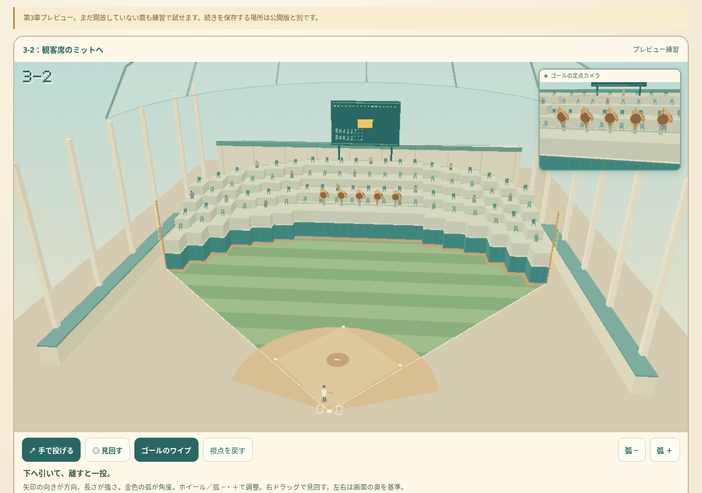
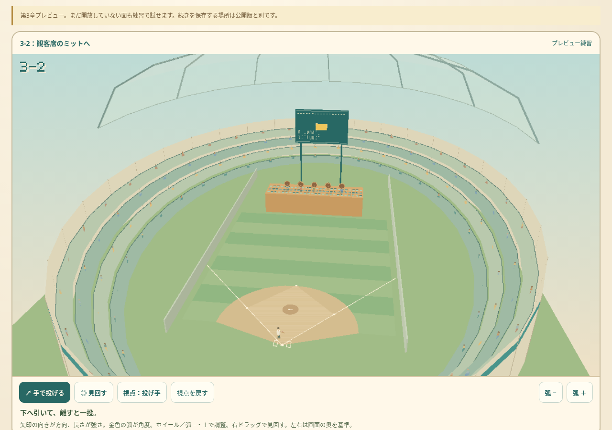
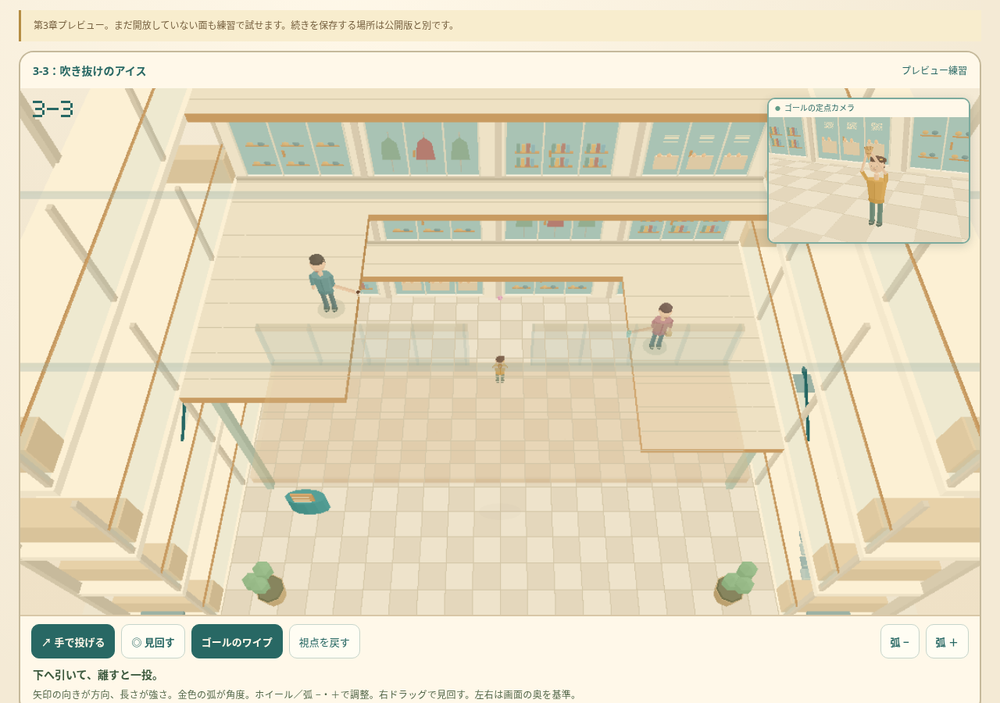
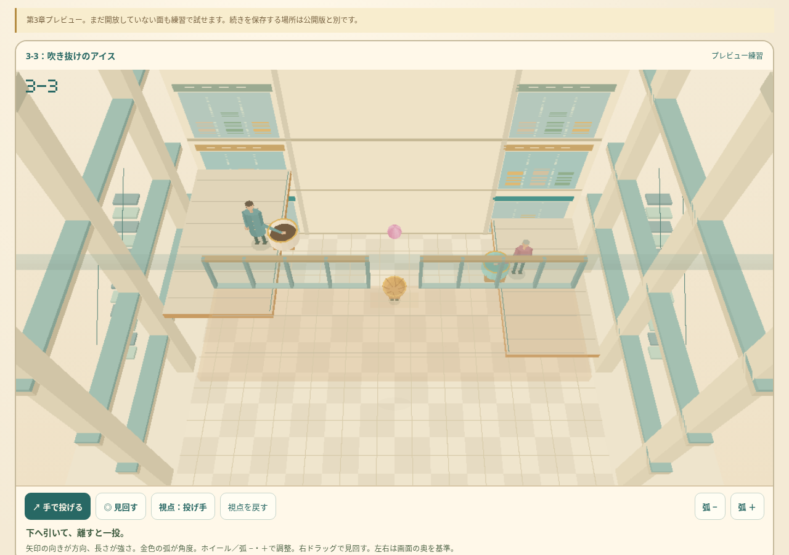
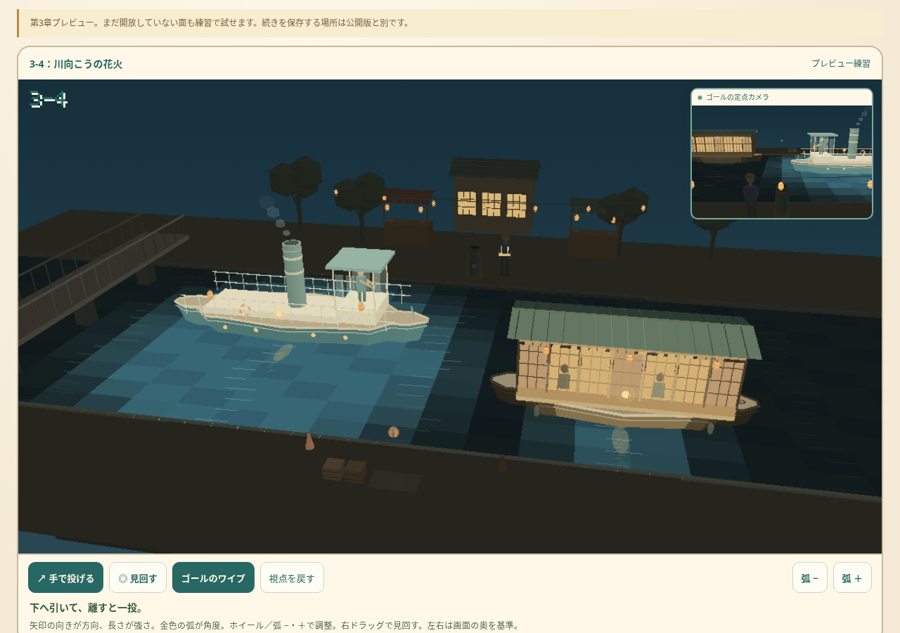
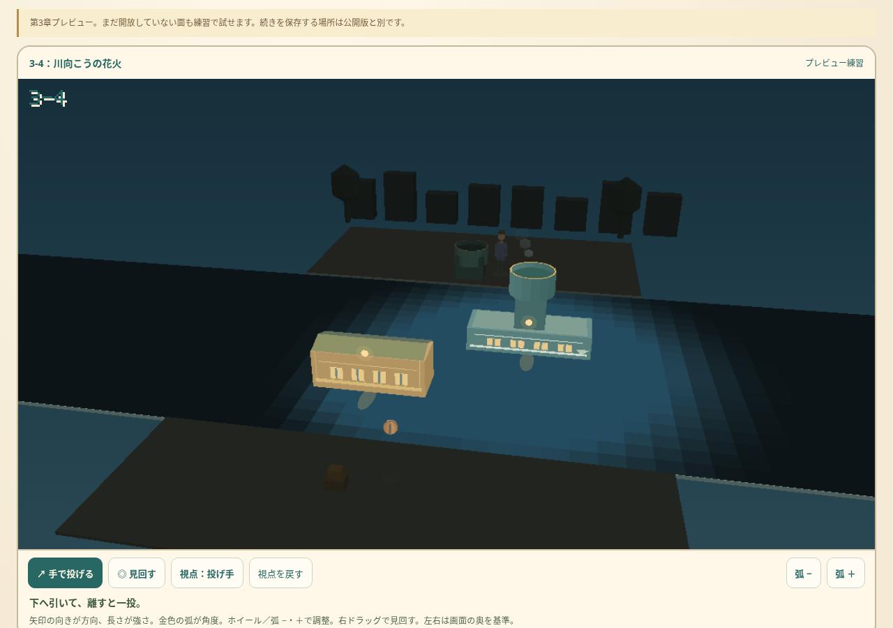

第3章の野球場・モール・川を改訂しました。右上の定点ワイプでゴール側も同時に見られます。主画面は右ドラッグで見回せます。
3-2
外野フェンスの向こうに客席が続き、観客がミットを構えています。小さな球場と大きな玩具グローブは、狙いやすさのためのデフォルメです。


3-3
店舗の窓や商品、つながる回廊と支柱を追加。コーンと飲み物を手に持てる尺度へ直し、下の子供の手元をワイプで映します。コーンにはアイスを通すのではなく、上から乗せます。


3-4
先細りの船体、屋形船の障子と提灯、汽船の操舵室・甲板・煙突を作り直しました。横切る船の灯りと水面の反射を見ながら、対岸の花火筒を狙います。

